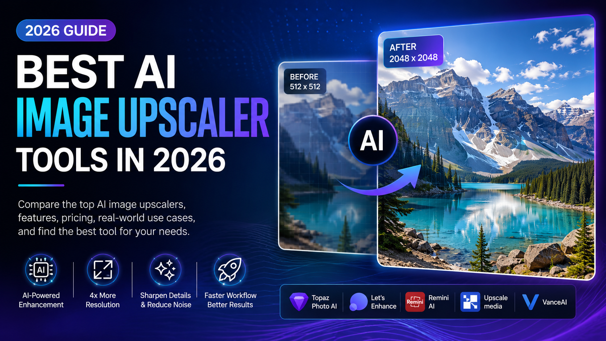

Not long ago, increasing the resolution of an image often resulted in disappointment. Enlarged photos became blurry, details disappeared, and visual quality quickly degraded.
Whether you were working with an old family photograph, a compressed website image, social media graphics, product photography, or AI-generated artwork, traditional image enlargement methods struggled to maintain clarity.
Artificial intelligence has completely changed this reality.
Modern AI image upscalers can intelligently analyze visual patterns, reconstruct missing details, sharpen textures, reduce noise, and generate realistic enhancements that make images appear dramatically more professional.
AI upscaling does far more than increase image size. Advanced models actually predict and recreate missing visual information, producing results that often look significantly better than standard resizing techniques.
Today, AI image upscaling technology is used by photographers, designers, marketers, content creators, online businesses, developers, and digital agencies around the world.
🚀 Why AI Upscaling Is Transforming Digital Content
High-quality visuals have become one of the most important factors influencing engagement, credibility, and conversion rates across the internet.
From e-commerce stores and social media campaigns to blogs and digital portfolios, professional-looking images help businesses attract attention and build trust.
- Higher engagement rates
- Improved visual quality
- Better user experience
- More professional branding
- Stronger marketing performance
- Enhanced AI-generated artwork
🧠 How AI Image Upscaling Actually Works
Unlike traditional image resizing methods, AI image upscalers do not simply stretch existing pixels across a larger canvas.
Instead, advanced machine learning models analyze the image, identify visual patterns, recognize objects, textures, edges, lighting conditions, and structural details, then generate entirely new pixels that blend naturally with the original image.
This process allows AI systems to recreate details that appear realistic even when the original image contains limited information.
Modern AI upscalers typically perform multiple enhancement tasks simultaneously, including resolution expansion, detail reconstruction, noise reduction, texture refinement, edge sharpening, and artifact removal.
Most leading AI models are trained using millions of high-resolution and low-resolution image pairs. By learning the relationship between these images, the AI becomes capable of predicting what missing details should look like when enlarging photos.
The result is a dramatically improved image that often appears sharper, cleaner, and more professional than conventional enlargement techniques.
⭐ Key Benefits Of AI Image Upscaler Tools
The growing popularity of AI upscaling technology is driven by the significant advantages it offers to creators, businesses, and professionals.
- Increase image resolution without major quality loss
- Restore old or damaged photographs
- Improve product photography for e-commerce stores
- Enhance AI-generated artwork and illustrations
- Create higher-quality marketing materials
- Reduce time spent on manual editing
- Improve website visuals and user experience
- Prepare images for large-format printing
For best results, use AI upscalers on images that still contain visible structure and details. AI performs significantly better when it has enough visual information to reconstruct missing areas accurately.
Businesses particularly benefit from AI upscaling because image quality directly affects customer perception. Sharper visuals often lead to higher engagement, better product presentation, and increased trust.
Content creators also use AI upscalers to improve thumbnails, social media graphics, blog illustrations, YouTube assets, and portfolio projects without investing in expensive editing software.
🔥 Top AI Upscaler Tools In 2026
The AI image enhancement market has expanded rapidly, with several platforms offering impressive results for different types of users.
| Tool | Best For | Strength |
|---|---|---|
| Topaz Photo AI | Professional Photography | Exceptional Detail Recovery |
| Upscale.media | Quick Online Enhancement | Fast Processing |
| Let's Enhance | E-Commerce Images | Product Optimization |
| Adobe Firefly | Creative Projects | AI Integration |
| Canva AI Upscaler | Beginners | Ease Of Use |
Each platform offers unique advantages, making it important to select the solution that aligns with your workflow, budget, and quality requirements.
📊 AI Upscaler Comparison Table
Choosing the right AI image upscaler depends on several factors, including image quality, processing speed, pricing, supported formats, and intended use cases.
Some tools are designed for professional photographers, while others focus on content creators, online businesses, and casual users who need quick improvements without technical complexity.
| Feature | Topaz Photo AI | Let's Enhance | Upscale.media | Canva AI |
|---|---|---|---|---|
| Image Quality | ⭐⭐⭐⭐⭐ | ⭐⭐⭐⭐⭐ | ⭐⭐⭐⭐ | ⭐⭐⭐⭐ |
| Ease Of Use | ⭐⭐⭐ | ⭐⭐⭐⭐ | ⭐⭐⭐⭐⭐ | ⭐⭐⭐⭐⭐ |
| Processing Speed | ⭐⭐⭐⭐ | ⭐⭐⭐⭐ | ⭐⭐⭐⭐⭐ | ⭐⭐⭐⭐ |
| E-Commerce Features | ⭐⭐⭐ | ⭐⭐⭐⭐⭐ | ⭐⭐⭐⭐ | ⭐⭐⭐ |
| Professional Editing | ⭐⭐⭐⭐⭐ | ⭐⭐⭐⭐ | ⭐⭐⭐ | ⭐⭐⭐ |
Professional photographers often prefer Topaz Photo AI, while e-commerce stores frequently choose Let's Enhance. Content creators and beginners typically benefit from Canva AI or Upscale.media due to their simplicity and speed.
💼 Business And E-Commerce Applications
Businesses increasingly rely on visual content to attract customers and build trust.
AI image upscaling allows companies to improve product images, marketing materials, advertisements, and website graphics without investing in expensive photoshoots or redesign projects.
For online stores, higher-quality images often lead to better user engagement and stronger purchasing confidence.
- Improve product photography
- Enhance marketplace listings
- Create sharper advertising visuals
- Upgrade old marketing assets
- Improve website professionalism
- Strengthen brand presentation
Many successful online stores use AI enhancement tools to refresh older product catalogs and maintain visual consistency across hundreds of product pages.
🎨 AI Upscaling For Designers And Creators
Graphic designers, digital artists, photographers, YouTubers, bloggers, and social media creators all benefit from AI image enhancement technology.
High-quality visuals help content stand out in competitive online environments where first impressions are often determined within seconds.
AI upscalers are particularly useful when creators need larger versions of existing images for banners, presentations, print projects, advertisements, or social media campaigns.
Instead of recreating assets from scratch, creators can quickly upscale and improve existing visuals while maintaining professional quality.
AI upscaling significantly reduces editing time, allowing creators to focus more on creativity, content production, and audience growth.
⚠️ Common Mistakes To Avoid
Although AI upscalers are powerful, users often make mistakes that limit results.
- Using extremely low-quality source images
- Applying excessive enhancement repeatedly
- Choosing the wrong upscaler for the project
- Ignoring artifact correction
- Expecting perfect reconstruction from heavily damaged photos
- Using compressed images as source files whenever possible
AI can improve image quality dramatically, but it cannot perfectly recover information that never existed. Starting with the highest-quality source image will always produce the best results.
🚀 The Future Of AI Image Enhancement
AI image upscaling technology is advancing at an incredible pace. What started as simple image enlargement has evolved into intelligent visual reconstruction powered by deep learning and computer vision.
Future AI models will likely combine multiple enhancement technologies into a single workflow, allowing users to upscale, restore, sharpen, colorize, and optimize images simultaneously.
As training datasets become larger and AI architectures continue improving, future upscalers are expected to generate even more realistic details while preserving the authenticity of the original image.
Within the next few years, AI image enhancement tools may become standard components in cameras, smartphones, design software, social media platforms, and content creation workflows.
We are also seeing growing integration between AI image generators and AI upscalers. This combination allows creators to generate images and immediately enhance them to professional quality without leaving a single platform.
🏆 Final Verdict
AI image upscalers have transformed the way individuals and businesses improve visual content.
Whether you are restoring old photographs, improving AI-generated artwork, enhancing e-commerce product images, creating marketing materials, or upgrading social media graphics, modern AI upscalers offer impressive capabilities that save time and deliver professional results.
While each platform has unique strengths, the best choice depends on your specific goals, workflow requirements, budget, and desired level of quality.
For creators, businesses, designers, marketers, and photographers, AI image enhancement has become an essential technology rather than a luxury feature.
Transform Your Images With AI
Explore modern AI-powered tools that can increase image resolution, improve visual quality, and help you create professional-grade content faster than ever before.
Explore AI Tools❓ Frequently Asked Questions
What Is An AI Image Upscaler?
An AI image upscaler is a tool that uses machine learning algorithms to increase image resolution while intelligently reconstructing missing details and improving overall image quality.
Can AI Upscalers Improve Old Photos?
Yes. Many AI upscalers can restore older photographs by enhancing sharpness, reducing noise, improving facial details, and recovering visual clarity.
Which AI Upscaler Is Best For Beginners?
Canva AI Upscaler and Upscale.media are often recommended for beginners due to their simple interfaces and fast processing speeds.
Do AI Upscalers Work For AI-Generated Images?
Absolutely. AI upscalers are commonly used to improve AI-generated artwork, making images sharper and more suitable for printing, marketing, and professional projects.
Are Free AI Upscalers Worth Using?
Free AI upscalers are excellent for occasional use. However, professional users often benefit from premium tools that offer higher quality outputs and advanced enhancement features.